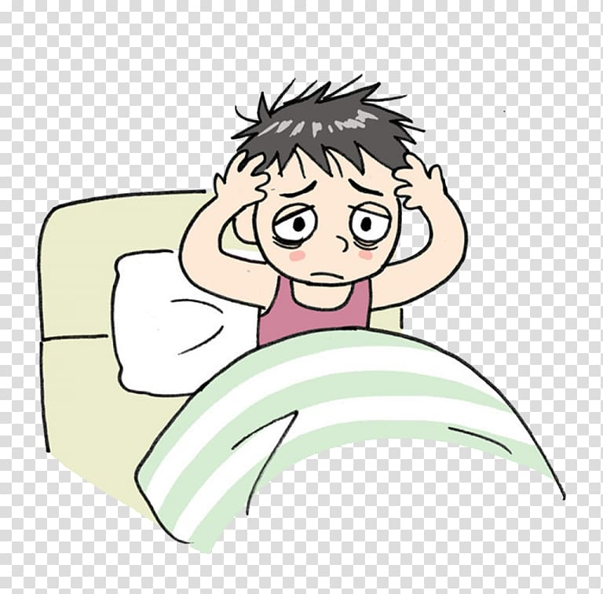
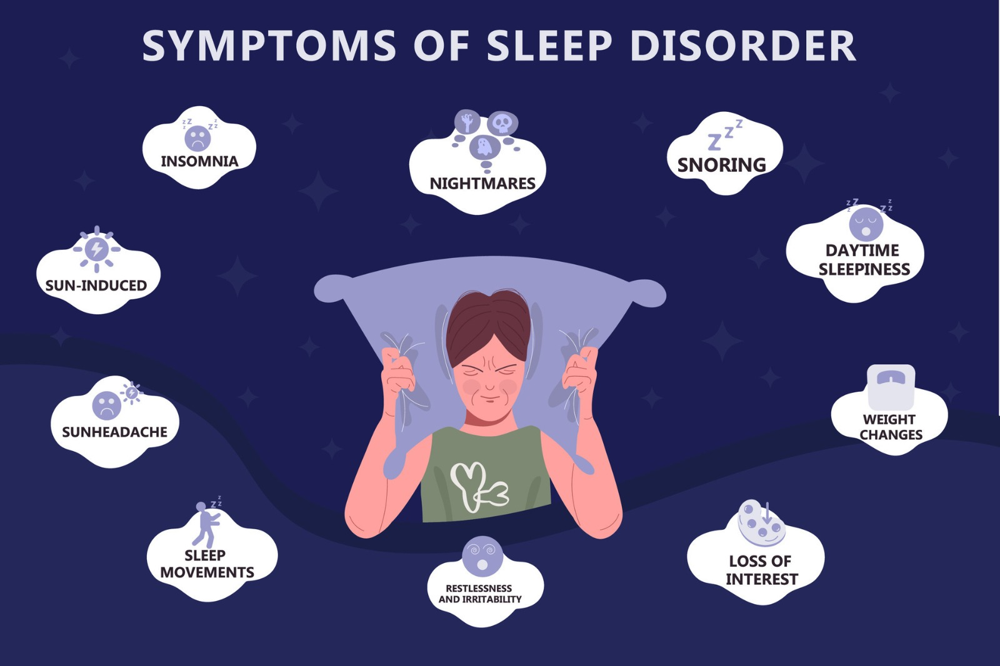

What is Sleeping disorders?
- You regularly have trouble sleeping.
- You feel tired during the day even though you slept for at least seven hours the night before.
- It becomes difficult to perform regular daytime activities.
Causes of Sleeping Disorders
A disruption to your body’s cycle of sleep and daytime wakefulness causes sleep disorders. Specific things may cause this to happen and it varies based on the type of sleep disorder you have.They may include:
- A symptom of a medical condition like heart disease, asthma, pain or a nerve condition.
- A symptom of a mental health condition like depression or anxiety disorder.
- Substance use before bedtime like caffeine or alcohol.
- Low levels of certain chemicals or minerals in the brain.
- A side effect of a medication.
It is possible that several factors interact to trigger the development of Sleeping disorders. The underlying causes may be further influenced by stressful life events, hormonal changes and personality traits.
Common Symptoms
Symptoms of common sleep disorders vary based on the type, but could include:
- Difficulty falling asleep or it takes more than 30 minutes to fall asleep regularly.
- Trouble staying asleep through the night or you wake up often in the middle of the night and can’t fall back asleep.
- Snoring, gasping or choking happens during sleep.
- Feeling like you need to move when you relax. Movement relieves this feeling.
- Feeling like you can’t move when you wake up.


Treatment for sleeping disorders
There are several types of treatment options available for various sleep disorders, which could include:
- Cognitive behavioral therapy.
- Taking medications (like sleeping pills or alerting agents) or supplements (like melatonin).
- Changing your sleeping routine to promote a regular sleep schedule and proper sleep hygiene.
First-Aid For sleeping disorders
If you encounter someone experiencing a mental health crisis...
- Go to bed when you feel tired
- Relax at least 1 hour before bed
- Exercise regularly during the day
- Make sure your mattress, pillows and covers are comfortable
- Often a milky drink before bedtime can help